8. Computer controlled machining
Make something big!
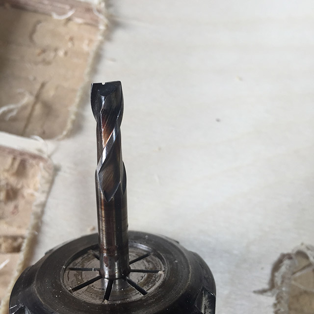 |
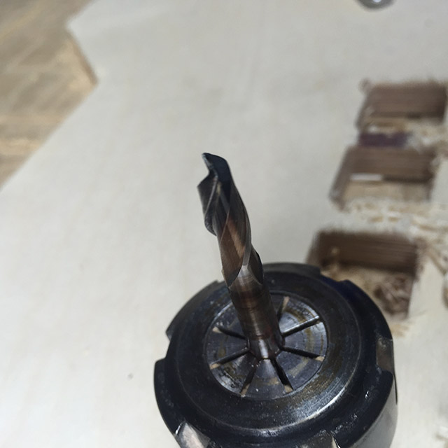 |
Chipped end-mill |
End-mill for cutting my project (2flutes ~ flat type) |
I've tried the tolerance from 90 to 170 with round and rectangle shape, and as my mill was not in good shape as shown above and I had a quite hard time making decision which feed rate i should use. I've measured from left-up corner starting from 90 and increasing the count by 10. The mill which looks awful was the only one that i could use that had 2 leaves and burnt so in fact It was good approach to use the end-mill that is not in 100% state.
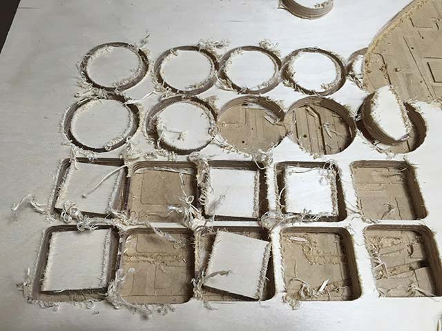 |
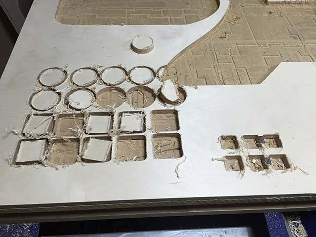 |
Tolerance test 1 |
Tolerance test 2 |
I did some testing before cutting the plywood (12T), to find appropriate chip-load for the mill. Our inventory(FabLab Seoul) was running out of end-mills due to regular comers and overuse of end-mills. So before cutting the actual wooden part it was necessary to do test.
It was quite sorry for myself that i didn’t find scrap piece of wooden material for tolerance test, which could have been wasting material for nothing. Because i had quite a scary moment when i was doing the mold for machinable wax, I didn’t want to take the risk with small part that needs specially made part to hold the object.
It was better to cut with 170 feed rate and now I could make after-finish with sandpaper. Be careful not to breathe in the powder of wood so it's wise to wear some kind of mask to avoid powder.
I've used (T-bone) which i thought is very stable to make tolerance between two parts. I've put 0.2 in both ends with the male-parts as my instructor guided me to make tolerance 0.2 for all different kinds of woods.
However due to lack of experience i had sand-out the male or female part in final assembly I'm still managing to find out what cause the tolerance to be unsuitable for the press-fit. It takes more time make tolerance by sandpaper or with cutting the wood by machine.
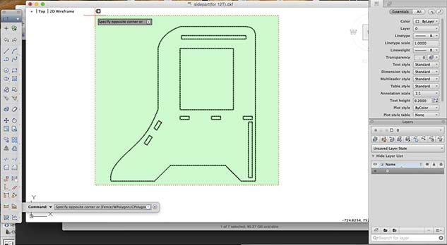 |
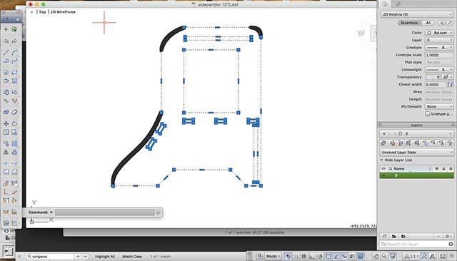 |
Editing dxf file on AutoCAD (Polyline-edit) |
Checking close vectors on AutoCAD 2015 |
AutoCAD 2015 tips : PE(Polyline edit) -> select objects(be sure to check multiple objects) -> ‘join’ to make final close vectors.
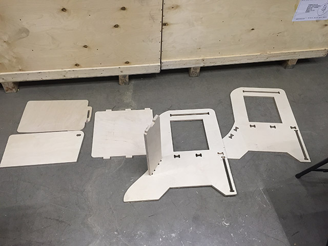 |
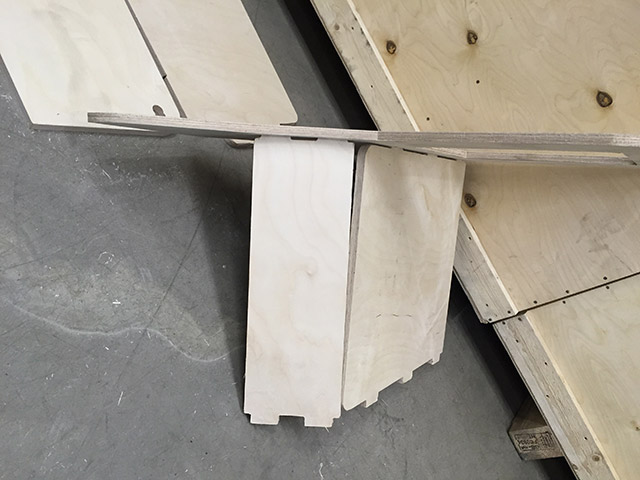 |
Before-assembly |
Starting assembly |
I've laid down all the parts to be assembled finally!! I've cut three different side pats which had lots of failures including burning the side-frame of wood, the layer being moved when cut with Shopbot(due to lack of screw holding the cutting layer) so It took a lot of time to actually make all the parts that are now finally ready to be press-fit.
I started with the left part to be press-fitted and I needed to make sure that the 3 different parts are well joined in order for later on, to be fit correctly with the last part
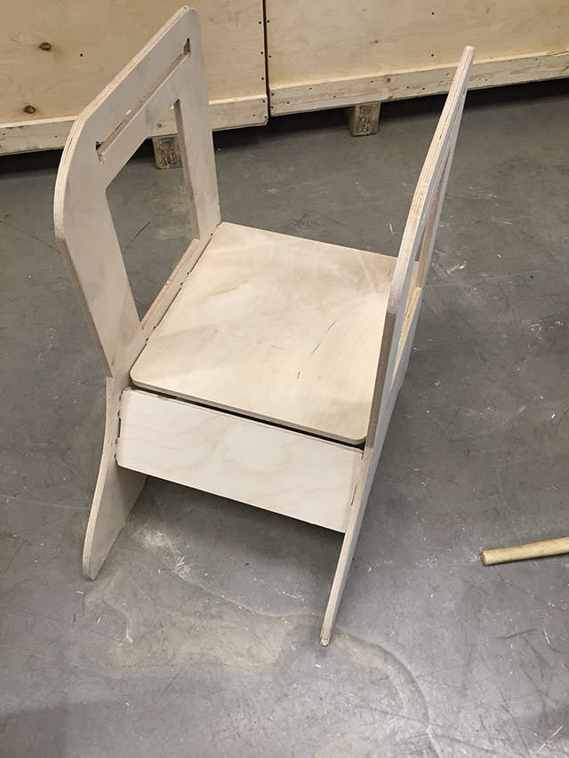 |
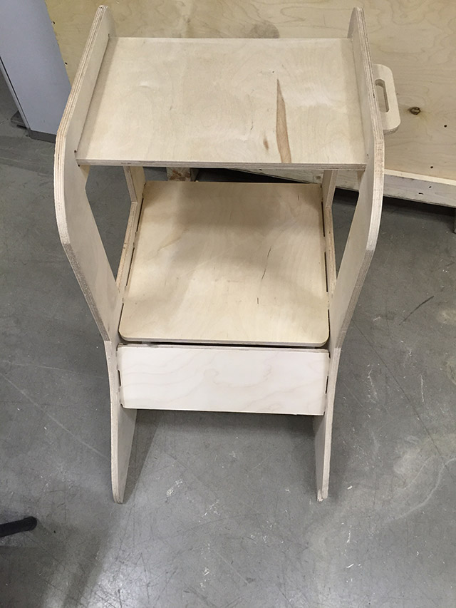 |
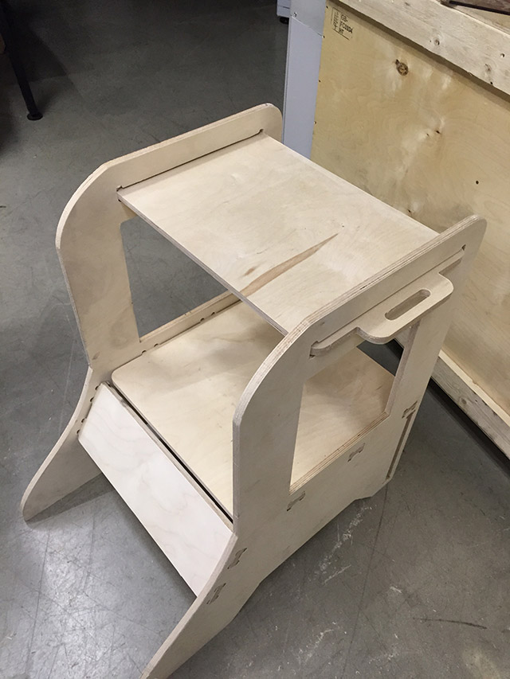 |
Assembling in progress |
||
To assemble the final part it took me a lot of hand force to actually join all 5 pieces at once (3 joints in seatboard.dxf, 2 joints in front-console box.dxf). The technique i did was to make sure to first press-fit the part that has more joint(3 joints seat-board) and align the one with less joint (front-console). Therefore, I used less force to align every joints at once.
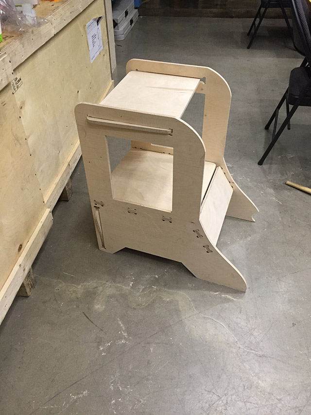 |
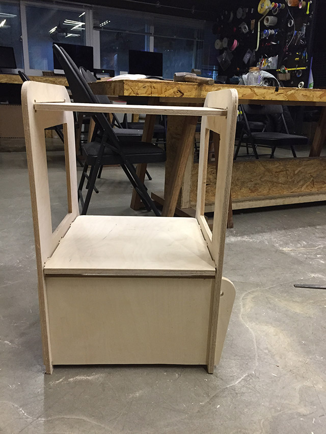 |
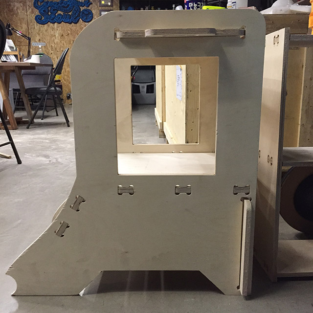 |
All parts assembled together |
||
By looking at the former Fab Academy student's work I try to make the upper-frame to be slided easily so I can manage to make setting later on, if i needed to clean or make adjustment in obstacles of the main-board. It's easier to make the sliding type and with handles it does have some portability.
The backboard is also sliding type as my intention is making the design that my circuit can be easily accessed when i want to, I have to make final arrangement but If the board is to be stuck at the side-part of my thing. I can easily remove the backboard and fix the circuit from behind not disassembling the whole parts which could be a disaster
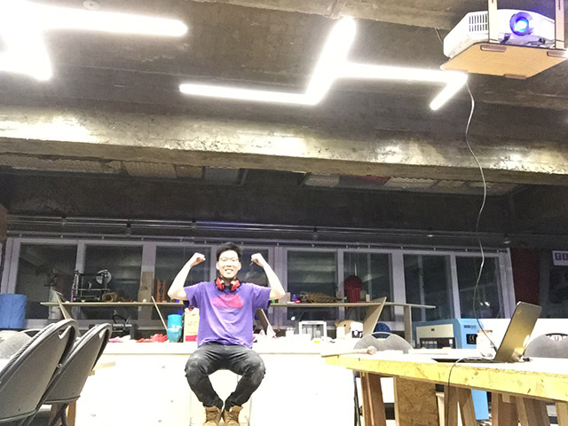 |
Yeah! My first designed CNC output and I cannot be more happier than today. After cutting out 12T and 15T Plywood finally i made something that can be used for some use. I've showed to my friend and she told me It was a stool with foot-rest which wasn't my intention but felt good with it's usability :)
What I did ….
- End-mill : 2 flutes, flat, 6mm mill
- Feed rate for Chipload : 170 ( chip load = feed rate / RPM * (no. of flutes=2)
- Autodesk Inventor : 3D modeling
- Autodesk Autocad : 2D design and editing open/close vectors
- VCarve Pro : dxf editing before putting into CNC
- Plywood 15T for the every part except sideparts, Plywood 12T for the sideparts